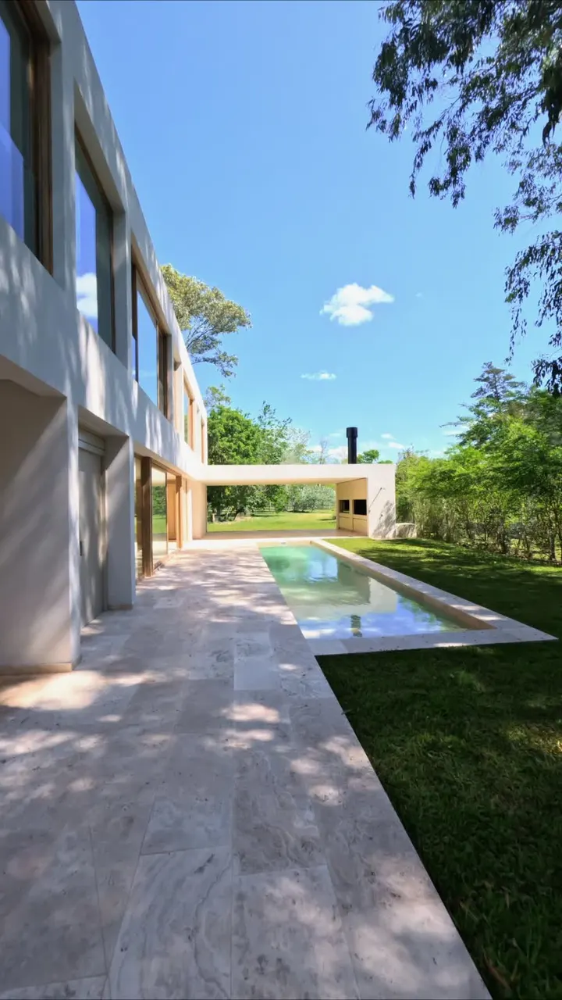
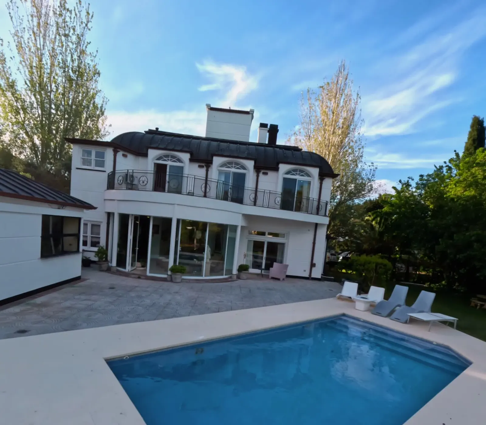
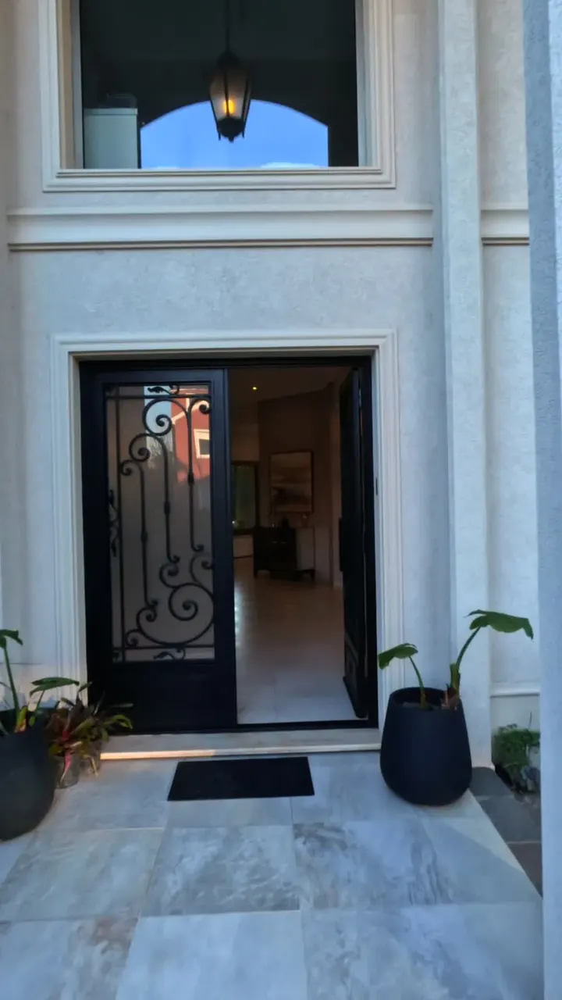
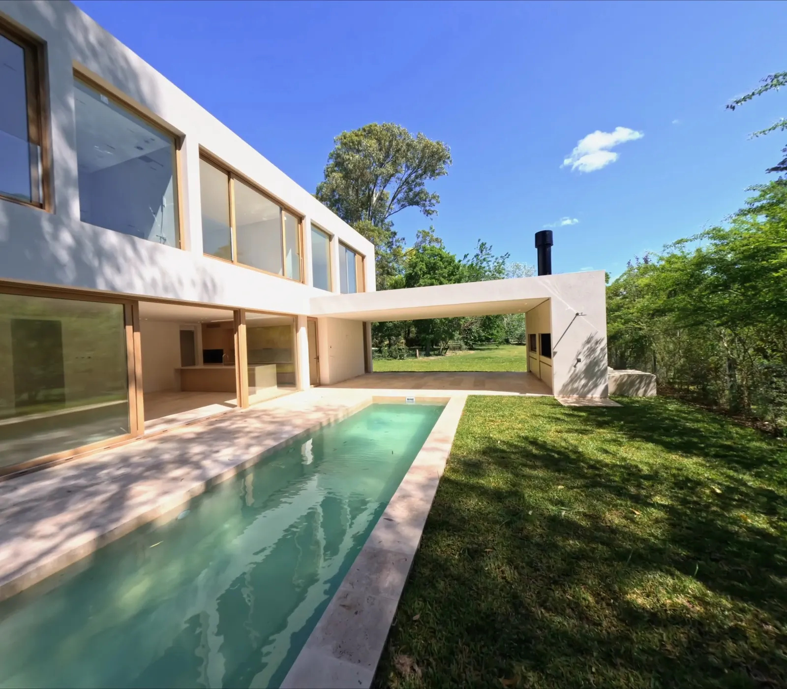
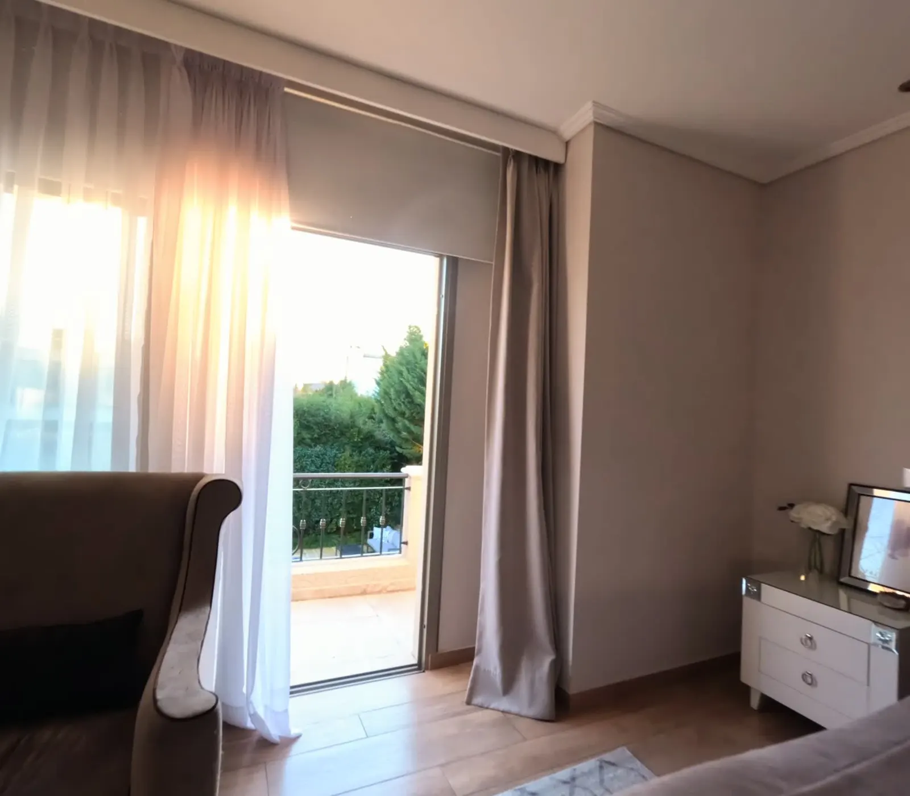
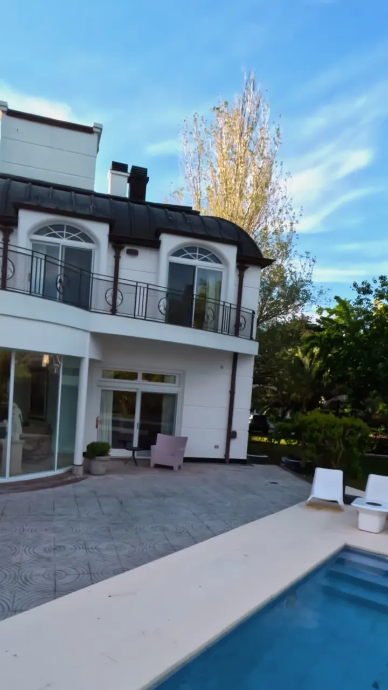
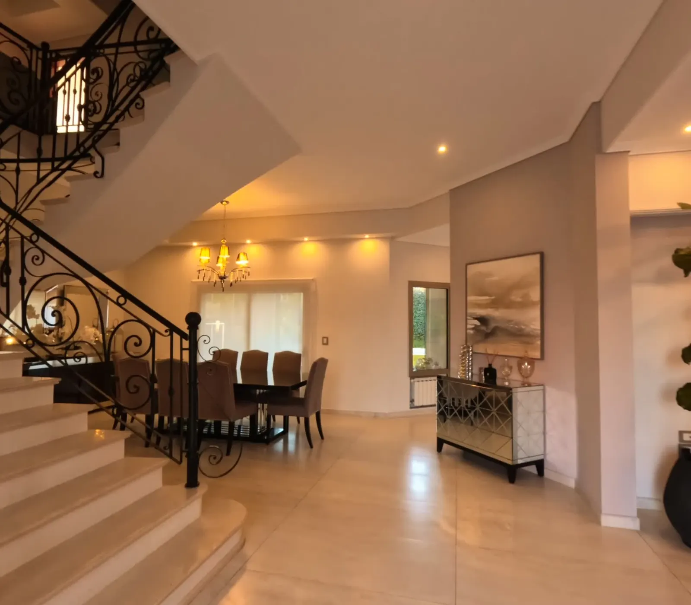
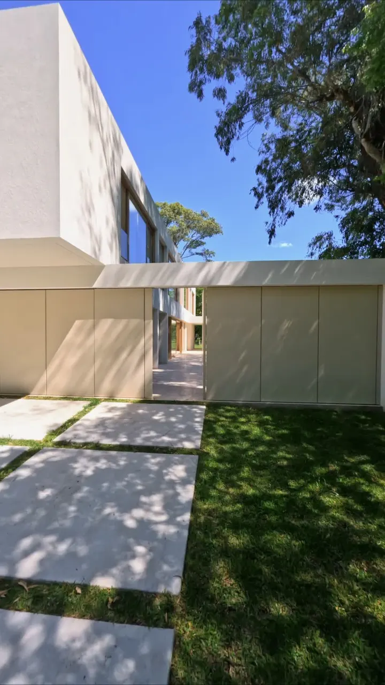

Un solo plano
Sin cortes ni efectos. El recorrido continuo es la forma más honesta de explicar cómo se habita un espacio.

Planos secuencia y cine aéreo para residencias de autor. Recorridos continuos que leen la luz, la escala y la intimidad de cada espacio.
DesplazarLa fachada se presenta despacio, como una primera frase.
Entre dos volúmenes blancos, la casa se abre.
Travertino, jardín y una lámina de agua bajo la luz de la tarde.
Manifiesto
Filmamos una casa del mismo modo en que se la proyecta: con paciencia, con luz natural y en un solo recorrido. Cada movimiento tiene una intención; cada segundo, una razón espacial.
Sin cortes ni efectos. El recorrido continuo es la forma más honesta de explicar cómo se habita un espacio.
Rodamos en la franja horaria que mejor describe los materiales. La hora del día se elige antes que la cámara.
Volamos a la altura de la mirada. La arquitectura se entiende caminándola, no sobrevolándola.

Un retroceso aéreo continuo. La simetría de inspiración francesa se descubre, plano a plano, frente al agua.
Un vuelo en retirada que revela la simetría de la fachada.
La arquitectura clásica, en diálogo con el agua.
Un único plano FPV que entra desde la calle arbolada, atraviesa el umbral entre los dos volúmenes y desemboca en la galería y el espejo de agua. Sin cortes. Guiado por la luz de media tarde.


Volumetría sobria y texturas nobles en un recorrido envolvente que conduce la mirada hacia el umbral.
Volúmenes serenos y texturas que dialogan con el jardín.
El umbral principal, abriéndose hacia el interior.
Un plano secuencia ininterrumpido que enlaza el exterior, el umbral y los ambientes más nobles de la casa.
Entorno, orientación y escala del paisaje. La obra situada en su territorio antes de llegar al detalle.
Fotogramas y tomas aéreas de alta resolución para monografías, prensa especializada y catálogos.
Cortes 9:16 pensados desde la coreografía del vuelo, sin perder encuadre ni intención.

De la intimidad de la suite a la apertura del horizonte. Un plano continuo de interior a exterior, a contraluz.
La luz de la tarde recorriendo el espacio íntimo.
La salida al exterior, hacia un paisaje abierto.
Doce cuadros extraídos de los planos secuencia, sin retoque adicional. La misma luz, el mismo encuadre, detenidos.









Recorremos el sitio, estudiamos la orientación y la incidencia de la luz, y definimos la hora exacta de rodaje.
Diseñamos la trayectoria plano por plano: ejes, velocidades y el orden en que cada ambiente se revela.
Una jornada técnica en la franja de luz elegida. Repetimos la toma hasta que la trayectoria es exacta.
Etalonaje cinematográfico fiel a los materiales y entrega multiformato en 4K, horizontal y vertical.
Entendió la casa mejor que muchas de las fotografías que teníamos de ella. El recorrido transmite exactamente lo que se siente al entrar.